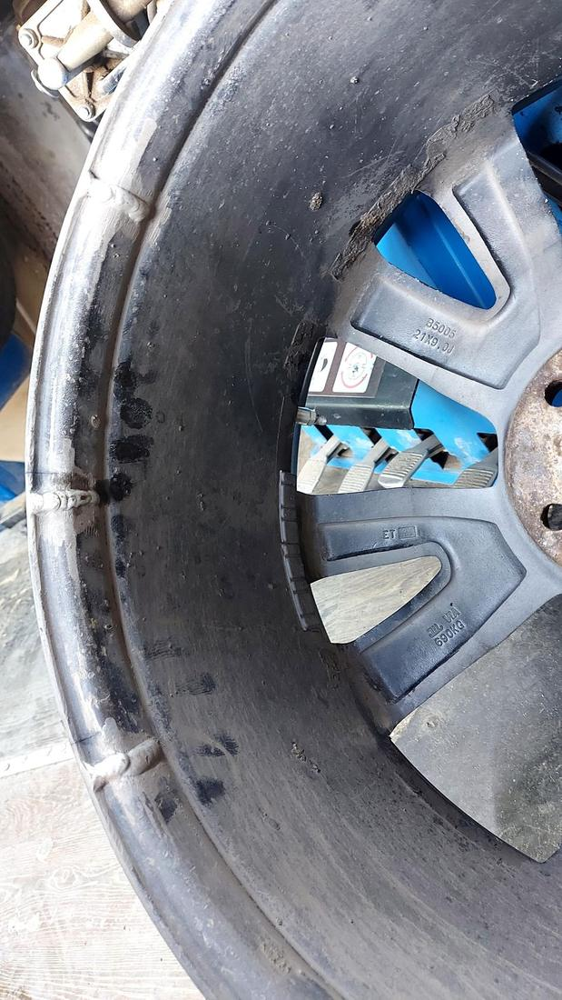
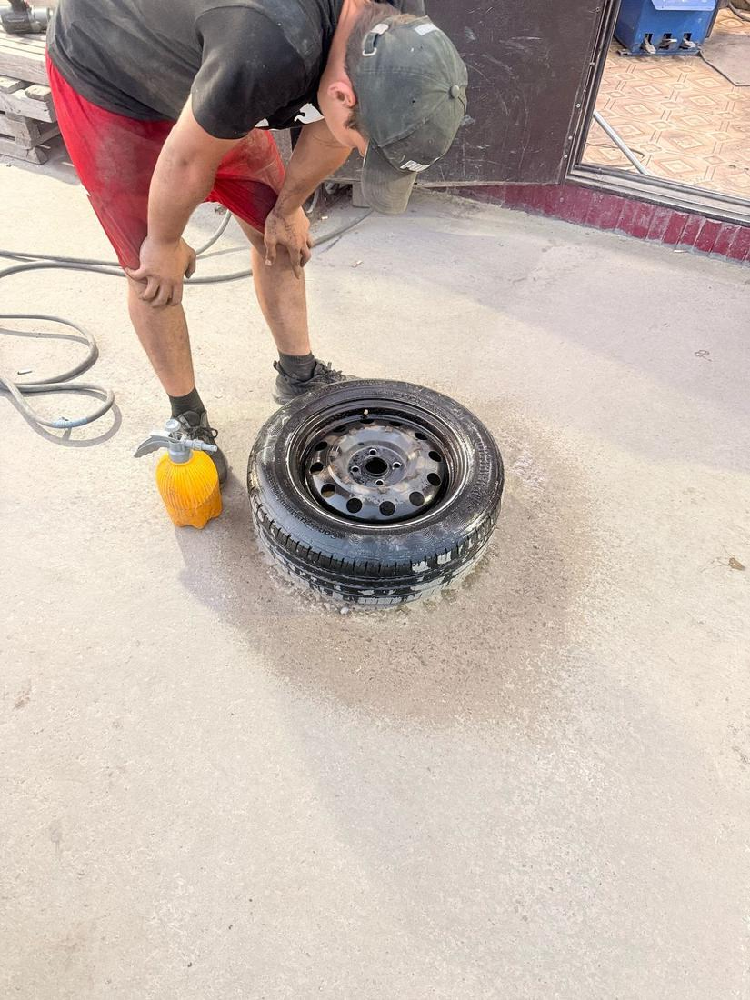
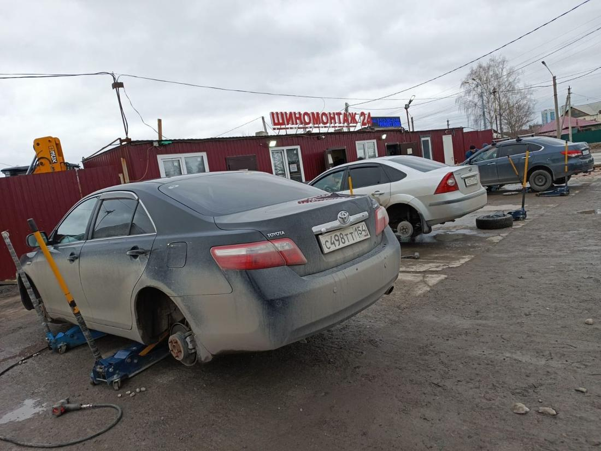
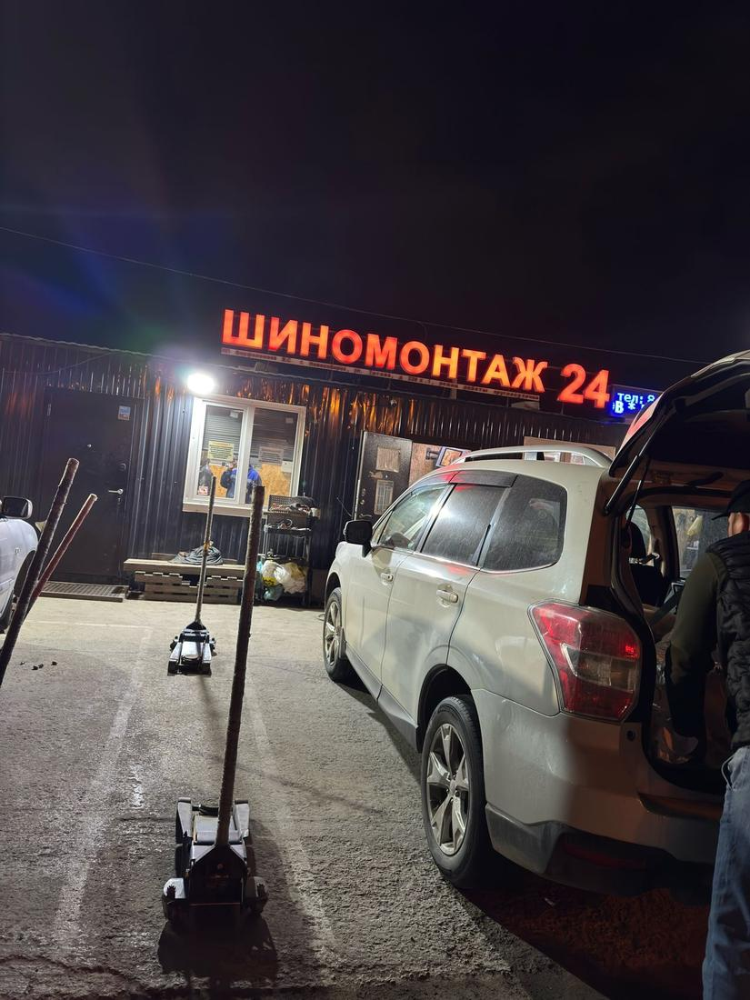
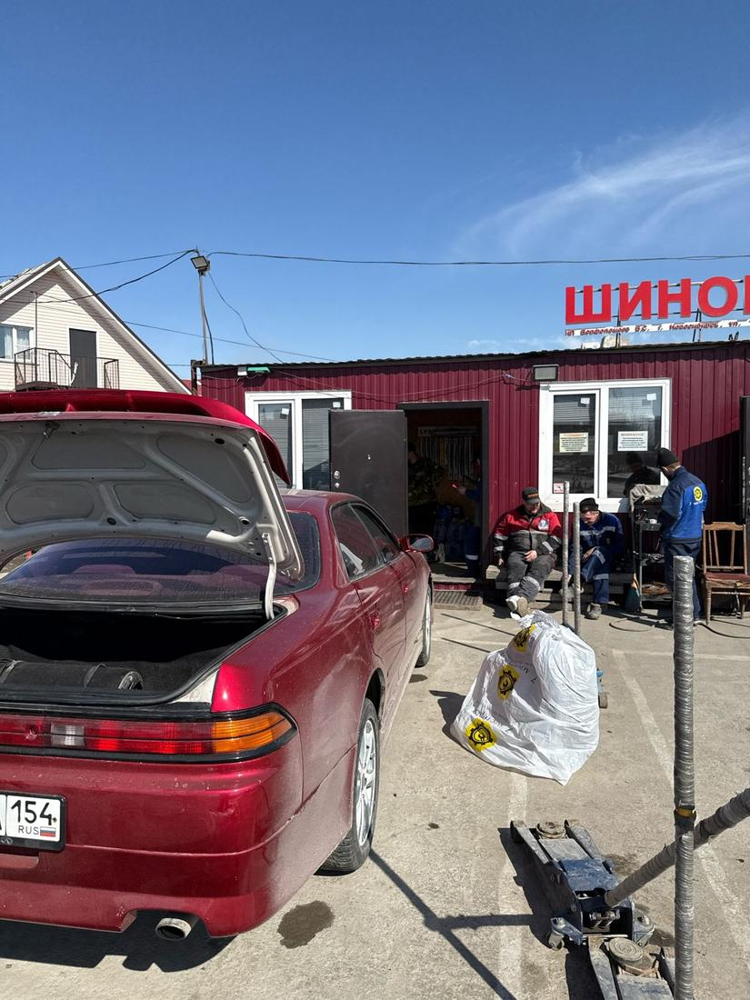

Ремонт порезов и проколов
Жгут, заплатка, вулканизация. Разбортируем и смотрим колесо изнутри — говорим честно, чинится оно или уже отъездило своё.
Мы на смене. Улица Титова, 220 к1 — круглосуточно, без выходных и обеда. Заплатка за пятнадцать минут, треснувший диск завариваем на месте.
Не только «переобуть». Беремся за то, от чего отказываются соседние мастерские: варим треснувшие диски, правим восьмёрки после ям, работаем с грузовыми колёсами.
Жгут, заплатка, вулканизация. Разбортируем и смотрим колесо изнутри — говорим честно, чинится оно или уже отъездило своё.
Убираем биение и восьмёрки после ям. Литые, кованые, штампованные. Диск снова держит давление и не бьёт на трассе.
Завариваем трещины и сколы по краю обода. Обычно дешевле, чем покупать новый диск, и держится не хуже заводского.
Колёса газелей, микроавтобусов и грузовиков. Отдельный инструмент и подъём — не «попробуем», а нормальная работа.
Восстанавливаем шипы перед зимой, нарезаем протектор. Комплект проживает ещё один сезон вместо покупки нового.
Меняем тормозные колодки на месте. Есть склад проверенных б/у покрышек, если нужно доехать недорого и сейчас.
Больше половины наших фотографий в 2ГИС — чужие диски до и после. Трещина, скол, восьмёрка, ободранный край: чиним то, что в магазине предложат просто заменить.









Ребята работают оперативно и очень быстро. Колесо постоянно спускало — оказалось, треснул диск. Оперативно заварили диск, выправили его. Всё отлично. Работают всегда, в отличие от других мастерских на районе. Рекомендую!
Отличный шиномонтаж! Приехала сюда впервые на велосипеде, мужчины мне быстро устранили проблему, второй раз приехала переобуться уже на своём автомобиле. Выполнили работу быстро и без лишних вопросов.
Быстро, качественно! Любая проблема — решат, помогут. Обращайтесь к ним с любым вопросом, всё обговаривается и делается. Всем советую.
Ребята отзывчивые, оперативно помогли с пробитым колесом, и цены очень адекватные. Рекомендую.